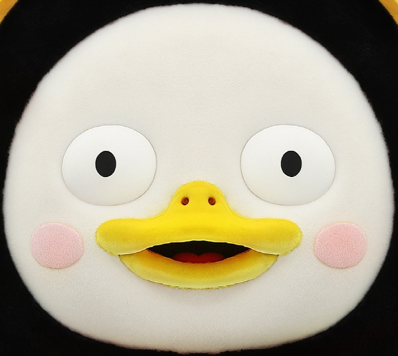
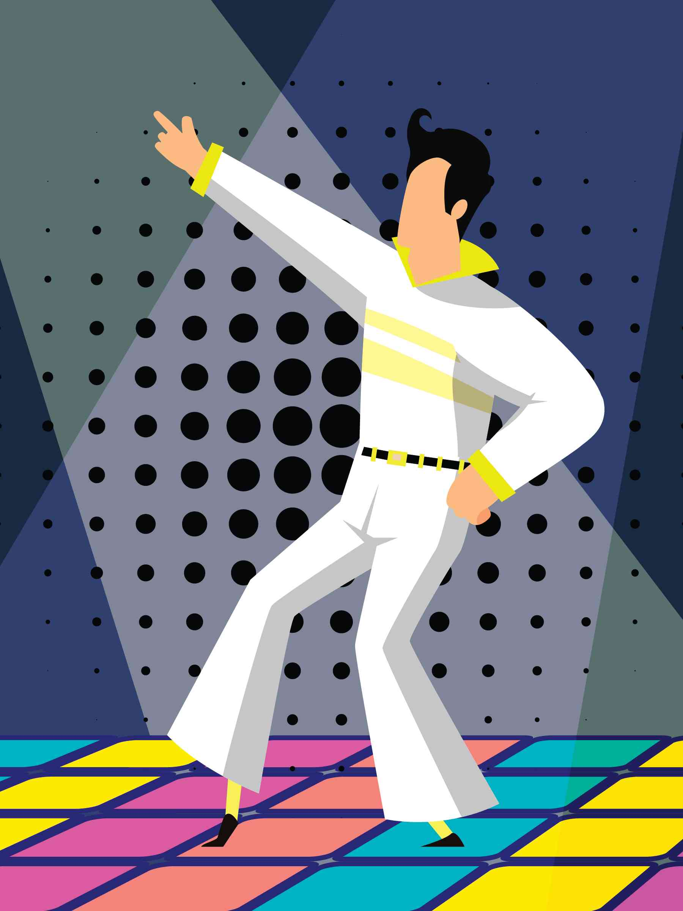
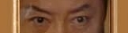

변형
2차원 변형
좌우로 움직이기

위아래로 움직이기
대각선으로 움직이기
가로로 확대/축소하기
세로로 확대/축소하기
확대/축소하기
지정한 각도만큼 회전
지정한 각도만큼 가로로 뒤틀기

지정한 각도만큼 세로로 뒤틀기
지정한 각도만큼 가로, 세로로 뒤틀기
3차원 변형
지정한 크기만큼 z축 방향으로 이동
지정한 크기만큼 x, y, z축 방향으로 이동
지정한 크기만큼 x축 방향으로 회전
지정한 크기만큼 y축 방향으로 회전
지정한 크기만큼 z축 방향으로 회전
지정한 크기만큼 x, y, z축 방향으로 회전
확인했소이다.
기타 변형 속성
transform-origin
backface-visibility
